ColorPhage Ocean Family Candidates
这是第三个进阶 family 的候选预览。Ocean 不做机械蓝色渐变，而是用海水青、深海蓝、冷白、雾蓝和少量暖色锚点，服务组学分层、空间图、连续结构和清洁型科研图。
advanced family: ocean
candidate count: 3
n = 8
plots rendered by ggplot2
advanced family / ocean
Ocean Current ocean_current
海流主线：适合组学样本分层、多来源样本比较和清洁主文散点图。
#1F4E5F#337A84#62A5A7#A7CED1#D8E7E4#7FA6C2#C99A6B#B6635CFill / bar
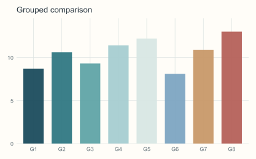
Colour / scatter
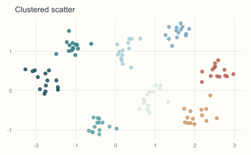
Colour / line
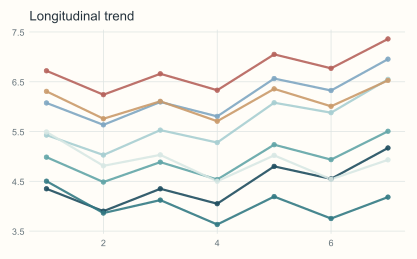
UMAP-like
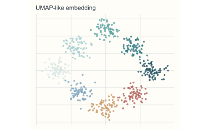
advanced family / ocean
Ocean Glass ocean_glass
海玻璃层：适合低刺激主文统计图、临床队列分层和长期阅读场景。
#3E6674#6D94A0#9DB9C0#D4E1DE#B7CDC7#86A9B8#D6B48A#A87573Fill / bar
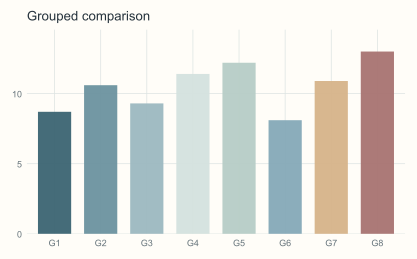
Colour / scatter
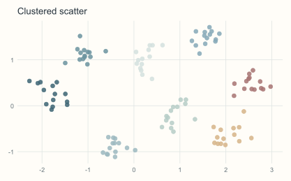
Colour / line
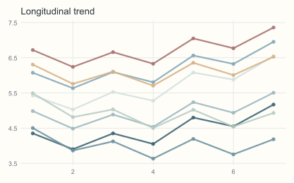
UMAP-like
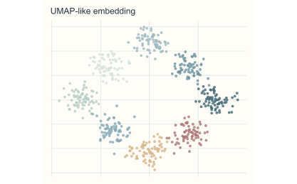
advanced family / ocean
Ocean Depth ocean_depth
深海层次：适合单细胞聚类、空间转录组分区和多亚型结果图。
#123B4A#245E70#3F8292#7EB1B8#BFD8D6#5F7895#9B6E7B#D08965Fill / bar
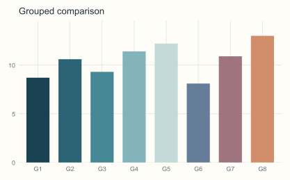
Colour / scatter
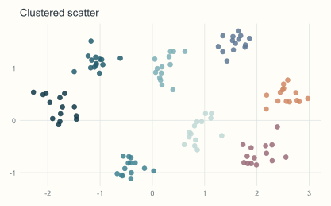
Colour / line
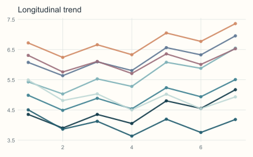
UMAP-like
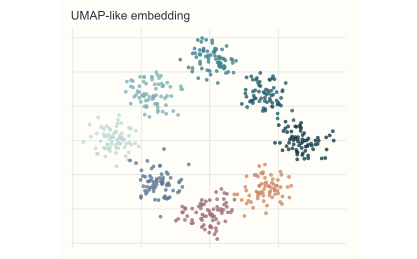